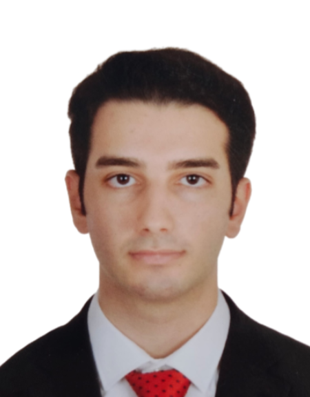

Masterstudent für Chemie- und Verfahrenstechnik. Ein leidenschaftlicher Ingenieur, der sich für Qualitätssicherung, Prozessoptimierung und operative Exzellenz einsetzt.

Ich absolviere derzeit mein Masterstudium in Chemie- und Verfahrenstechnik an der Technischen Universität Wien (TU Wien). Ich verfüge über aktive Erfahrung in den Bereichen Qualitätssicherung (QA), Dokumentation und Auditprozesse.
Als Student in Österreich habe ich derzeit eine Arbeitserlaubnis für bis zu 20 Stunden pro Woche. Für Vollzeitstellen benötige ich ein Visum-Sponsoring.
Mit meiner sorgfältigen, qualitätsorientierten Arbeitsweise und meiner Begeisterung für Prozessverbesserungen strebe ich danach, zum Erfolg meines Unternehmens maßgeblich beizutragen.
TU Wien - Wien, Österreich
Marmara Universität - Istanbul, Türkei
Ich bin immer offen für neue Möglichkeiten und Kooperationen.